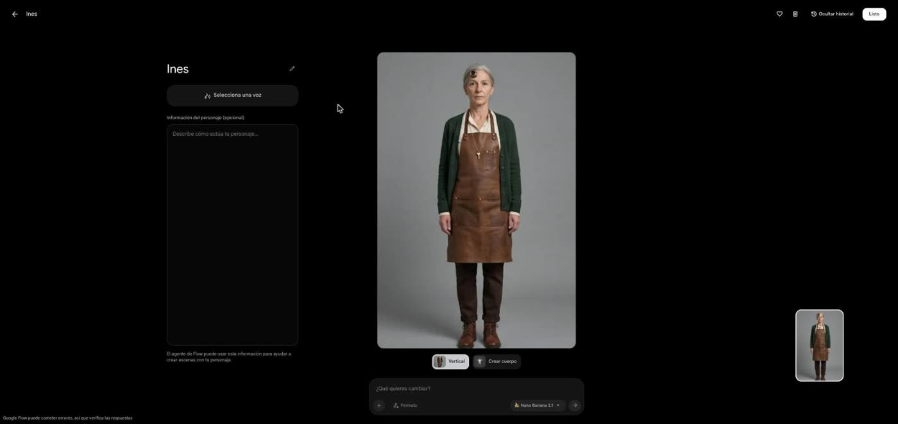
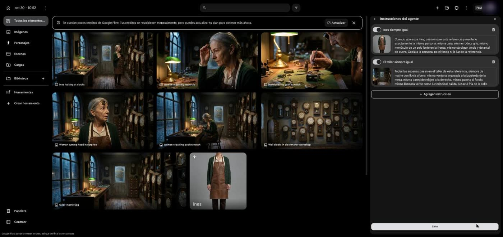
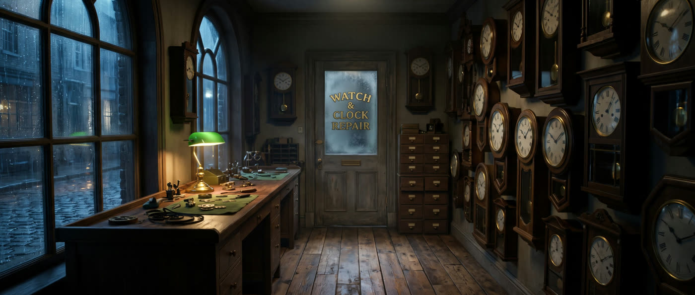
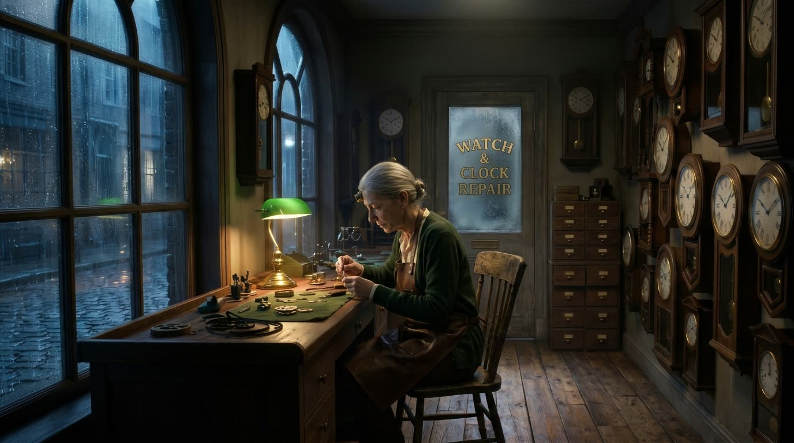
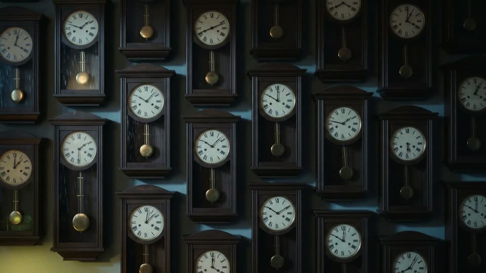
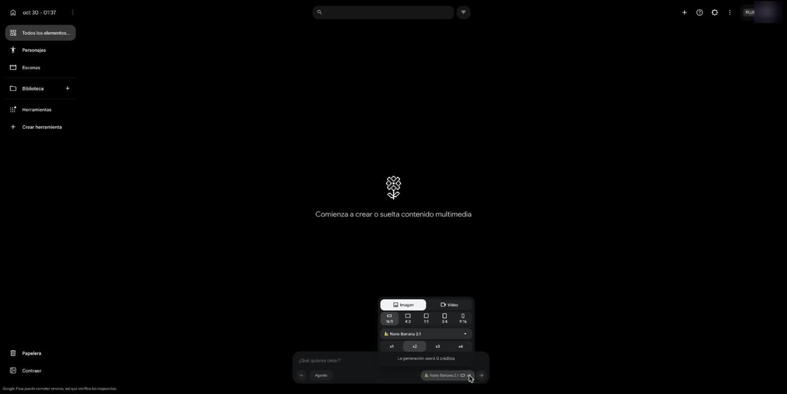
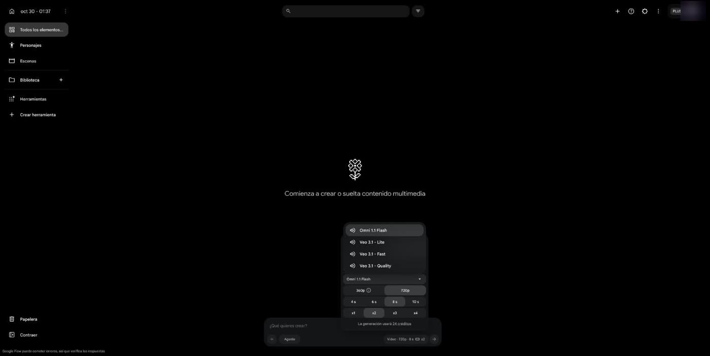

Clase SEN6 · Flow vs. Kling · La relojera
Personajes mantiene a la persona. Una imagen de referencia mantiene al lugar.
La receta completa
Cinco pasos, en este orden.
- 1
Cargá a tu protagonista en Personajes, con una foto clara, y ponele nombre.

- 2
Creá una instrucción para el personaje, con su referencia.

- 3
Creá otra para el lugar, con una imagen del lugar como referencia.

- 4
Generá tus fotogramas y revisalos uno por uno.

- 5
Pasá a video usando esos fotogramas como fotograma inicial, en clips cortos, con el prompt completo y aclarándole al agente que no lo acorte.

Mirá cada resultado como lo miraría el espectador. Si algo te hace dudar, a él también.
Personajes e Instrucciones, en Flow
Capturas reales. Tocá cualquiera para verla en grande.
Las instrucciones, para copiar
Estas son las que usé, con Inés y su taller. Cada una lleva su referencia al lado.
Para tu personaje y tu lugar
Es la misma estructura con corchetes para que la adaptes. Esta versión no se probó: lo que se probó son las de arriba.
El pedido al agente
El mismo en todas las pruebas: una imagen por plano, y el lugar descrito con todo detalle.
Las 4 pruebas de fotogramas
Mismo pedido al agente, con Nano Banana 2.1. Con mi plan, estas imágenes no descontaron créditos. Acá los fotogramas van siempre ordenados del plano 1 al 6, así comparás lugar por lugar al cambiar de pestaña.
Las pruebas no se corrieron en este orden: la de solo personaje fue la última. Acá van de menos a más para ver qué agrega cada herramienta. Ojo: entre la primera y la segunda también cambió la referencia (de una foto a la hoja de 4 vistas con ficha). Las instrucciones las redacté yo, y las pruebas corrieron con el texto y la referencia, pero sin título guardado. Estos fotogramas no se animaron.
El video, plano por plano
Una sola toma de cada plano por camino. Elegí un plano y mirá qué hizo cada uno.
- Las duraciones son distintas. Más duración es más tiempo para desviarse, así que no es una carrera pareja.
- Los créditos de Higgsfield y los de Flow no son la misma moneda. No compares esos números directamente.
- Los fotogramas del corto no se hicieron en Flow. Son los de la clase anterior, hechos en Higgsfield. Lo que se compara es la animación.
Los prompts de movimiento
Los de Prompt Camera, tal cual, los mismos que usé con Kling y con Flow a mano. En la segunda vuelta el agente los acortó sin avisar. Con la frase "no acortes los prompts", los respetó.
Precios de Flow Plus y costo real
Lo que mostró mi cuenta en el plan Plus, el 30 de octubre de 2026: 250 créditos por mes.
| Modelo | Clip | Créditos |
|---|---|---|
| Nano Banana 2.1 (imagen) | — | 0 |
| Veo 3.1 Lite | 8 s, 720p | 10 |
| Omni 1.1 Flash | 4 s, 720p | 7 |
| Omni 1.1 Flash | 8 s, 720p | 12 |
| Veo 3.1 Fast | 8 s, 720p | 20 |
| Veo 3.1 Quality | 8 s, 720p | 100 |
El 0 de las imágenes es lo que vi con mi plan. Omni deja elegir 4, 6, 8 o 10 s y 360p o 720p. Descarga: 270p GIF, 720p original, 1080p reescalado; 4K pide actualizar el plan.
Mi primer error: Flow me había quedado en Veo Quality. Lo vi antes de generar, pero seis clips eran 600 créditos. Antes de cada lote, mirá qué modelo está elegido.

La imagen con Nano Banana 2.1 marcaba 0 créditos.

Si ves 24 créditos como acá, es porque está en x2: son dos clips de Omni de 8 s.
60 + 60 + 60 + 28 = 208. El saldo en pantalla después de las 4 pruebas de imagen fue 42: coincide con 250 − 208, o sea que las imágenes no descontaron nada. Los créditos se restablecen el 27 de noviembre. El banner hablaba de "+50 diarios", pero el saldo no los reflejó.